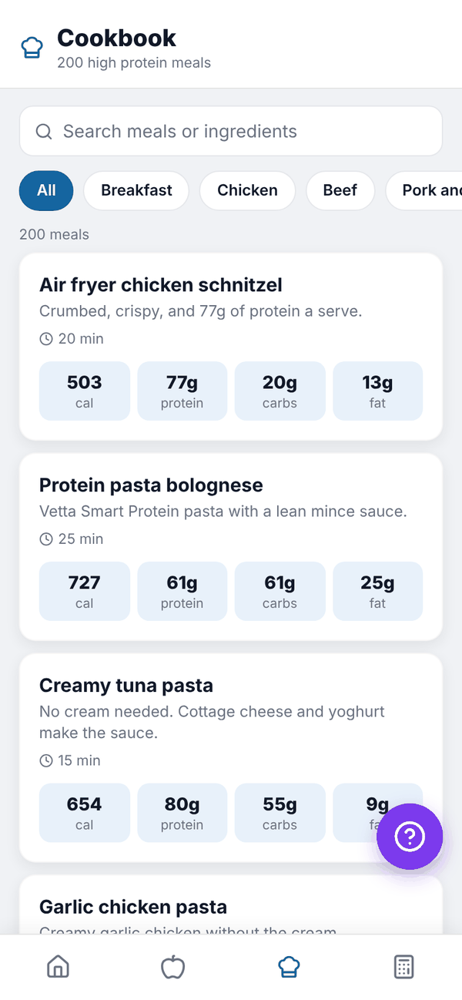
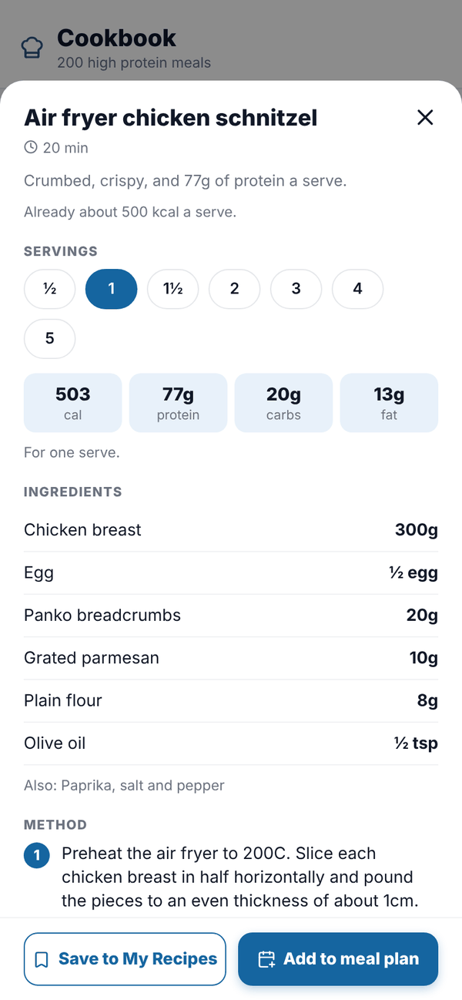

Totality Nutrition guide
Cookbook
Browse 200 high protein meals, then save one to My Recipes or add it to your meal plan by the serving.
The Cookbook is a tab of its own with 200 high protein meals, each about 500 kcal a serve. Browse and read every recipe on any plan. Saving a recipe to My Recipes and adding it to your meal plan are Trial and Paid.
Tap Cookbook on the bar along the bottom.


Find a meal#
- Type in Search meals or ingredients, for example "chicken" or "oats".
- Tap a category: All, Breakfast, Chicken, Beef, Pork and turkey, Seafood, Pasta, Bowls, Wraps and sandwiches, Veg and soups, Snacks or Air fryer. The categories wrap onto more than one line.
- Tap a meal to open it.
A recipe#
Each recipe shows its calories and macros for one serve, then:
- SERVINGS: tap ½, 1, 1½ or up to 5. The calories, macros and ingredient amounts change to match.
- INGREDIENTS, with amounts for the servings you picked.
- METHOD, step by step.
Save it or plan it Trial Paid#
- Tap Save to My Recipes to keep it with your other recipes. It then logs like any recipe. See Recipes.
- Or tap Add to meal plan. Pick WHICH DAY and WHICH MEAL (Breakfast, Lunch, Dinner or Snack), check the servings, and tap Add.
The meal lands in your meal plan for that day and, as planned food, in your food log for that meal. Mark it eaten when you've had it. See Meal plan.
On Free, both buttons show a lock. Tapping one shows the plans. You can still read every recipe and cook from it, and log the ingredients yourself.
Questions#
Are the Cookbook recipes the same as the 200 High Protein Meals book?
Yes. They're the same 200 recipes, inside the app.
Can I change a recipe?
Save it to My Recipes, then log it and change the foods in your food log. The Cookbook copy stays the same.
Why are the buttons locked?
Saving and planning are on the Nutrition plan. Reading and searching the recipes is free.